Nuestros Productos
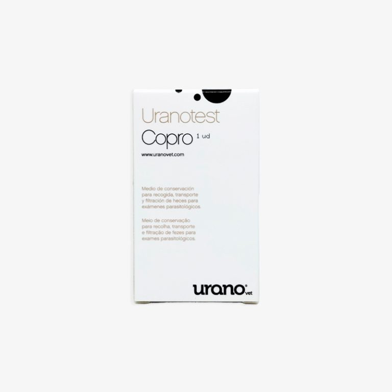
Detección simultánea de anticuerpos de Leishmania
infantum, Ehrlichia canis, Anaplasma platys y
antígeno de Dirofilaria immitis.
Urano Test
$150.000
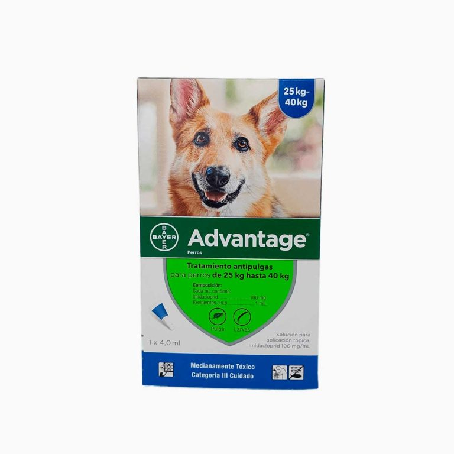
Advantage Multi® es una tratamiento de uso externo
elimina con rapidez las infestaciones de pulgas,
previenen el mortífero gusano del corazón y protege
a tu perro de parásitos intestinales.
Advantage
$50.000
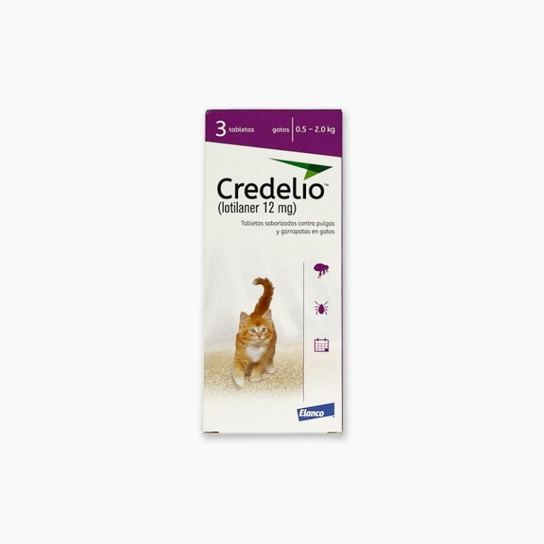
Este medicamento veterinario proporciona una
eliminación inmediata y persistente de la actividad
durante 1 mes para garrapatas y pulgas.
El medicamento veterinario se puede utilizar como
parte de una estrategia de tratamiento para el
control de la dermatitis alérgica por pulgas (DAP).
Credelio
$72.000
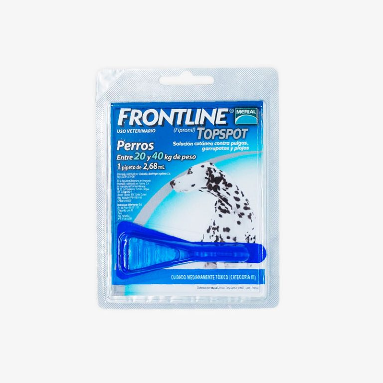
Actúa con velocidad en las primeras 4 horas tras
la aplicación matando pulgas, garrapatas y piojos.
FRONTLINE®Spray se puede aplicar en cachorros de
gatos y perros a partir de los 2 días de vida.
Frontline
$21.000
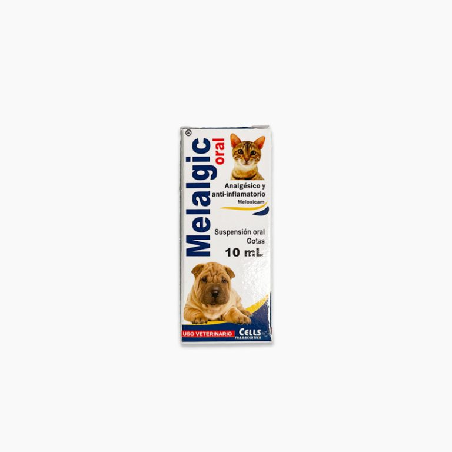
Anti-inflamatorio no esteroidal (AINE) para uso en caninos y felinos.
Reduce el dolor y la inflamación mediante la inhibición de la síntesis de prostaglandinas,
desencadenantes de la respuesta inflamatoria.
Melalgic
$14.000

Las gomas para perros con sabor a carne son deliciosos snacks para perros
con gran contenido de ácidos grasos que favorecerán su salud. Además de ser un rico snack,
las gomitas para perros de Aikos funcionan como suplemento alimenticio, pues aportarán
especiales nutrientes para favorecer la salud de la piel, el brillo del pelaje, la digestión
y la salud oral.
Vitaminas
$9.000
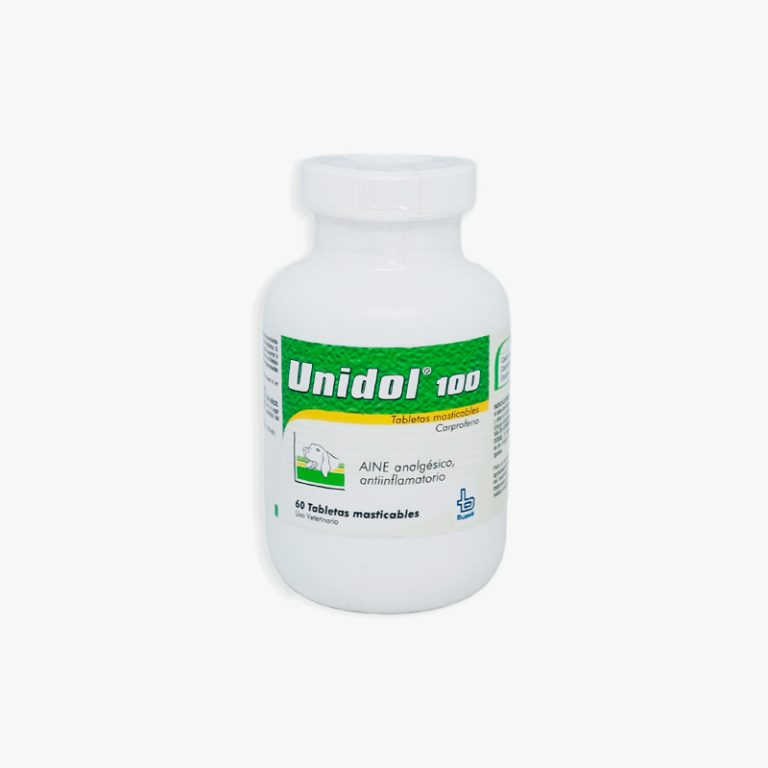
Unidol® es un medicamento con acción antiinflamatoria y analgésica no esteroidal “AINE”
que combate de manera selectiva la enzima ciclooxigenasa 2, que acelera la formación de
sustancias que causan inflamación y dolor. Su acción ayuda al tratamiento del dolor leve
y moderado.
Unidol 100
$240.000
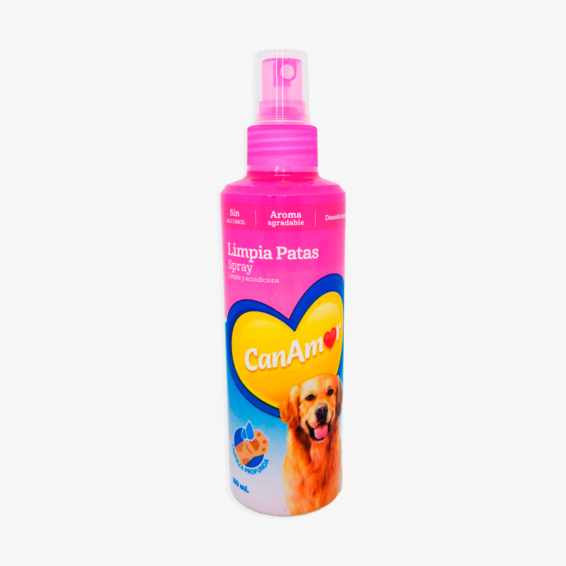
Spray Limpia Patas CanAmor para perros de 150 ml
Limpia Patas
$16.000
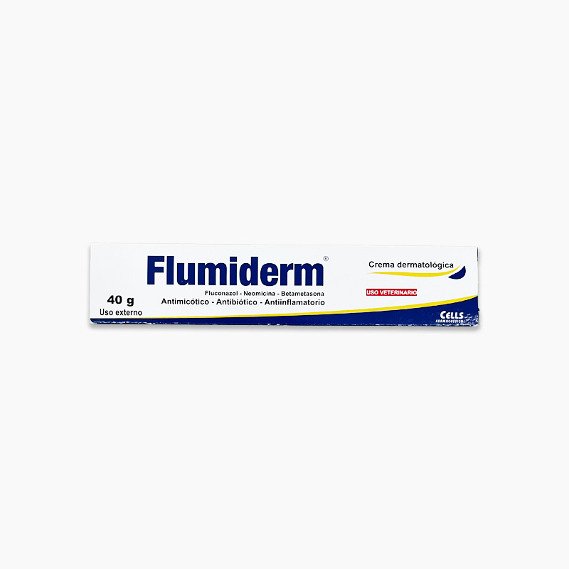
Crema antimicótica y antibacteriana de aplicación externa para uso en todas \
las especies domésticas.
Flumiderm
$17.700
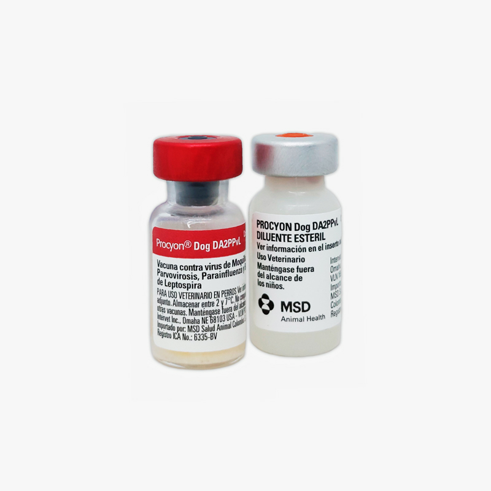
Proteja a sus perros sanos contra moquillo, hepatitis, parainfluenza, parvovirosis
y leptospirosis con Procyon Dog DA2PPvL de MSD Salud Animal.
Procyon
$70.900
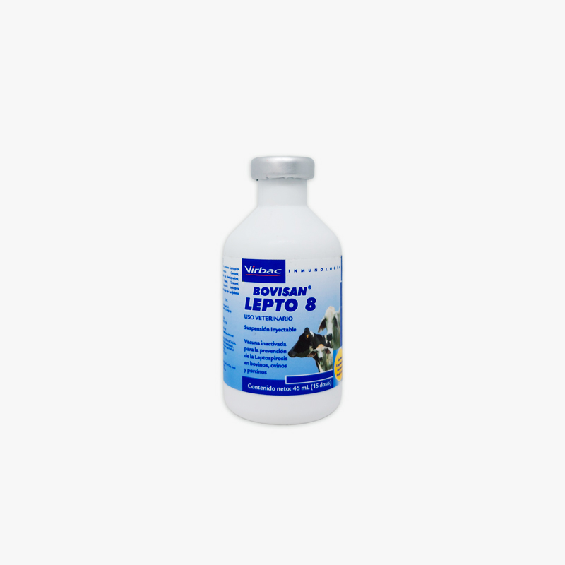
Es una suspensión inyectable. Cada dosis de 3 mL contiene: Leptospira interrogans
serovares canicola, grippotyphosa, Hardjo tipo hardjoprajitno, icterohaemorragiae,
pomona, tarassovi, wolffy ≥ 10 7 Bacterias Leptospira borgpetersenii serovar hardjo \
tipo hardjobovis ≥ 10 7 Bacterias. Exipientes c.s.p. 3 mL.
Lepto 8
$26.600
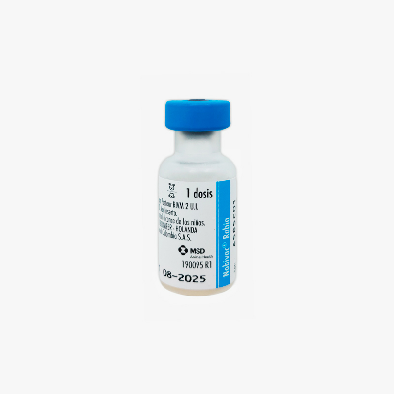
Es una vacuna viva combinada contra el moquillo, la hepatitis infecciosa canina
producida por adenovirus canino tipo 1, infecciones por adenovirus canino tipo 2,
la parvovirosis canina y la parainfluenza canina.
Nobivac
$59.800
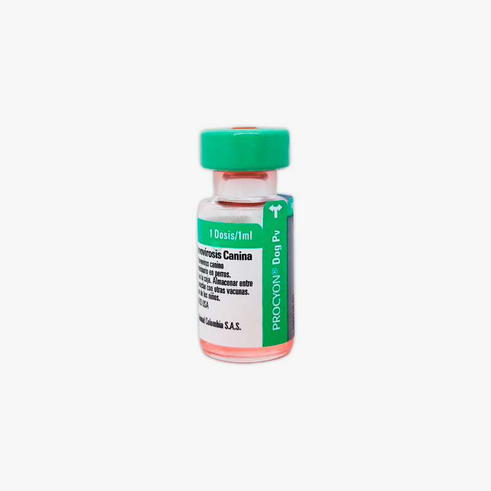
Es una vacuna viva combinada contra el moquillo, la hepatitis infecciosa canina
producida por adenovirus canino tipo 1, infecciones por adenovirus canino tipo 2,
la parvovirosis canina y la parainfluenza canina.
Nobivac Suave
$69.800
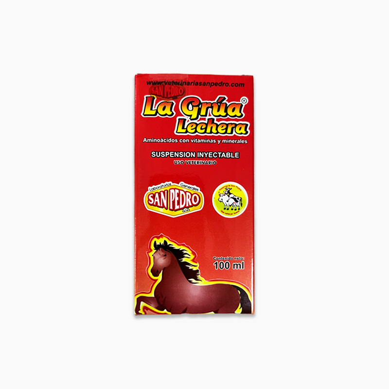
En Equinos como coadyuvante en el tratamiento de enfermedades Infeccionas;
parasitaria o de origen orgánico y en la convalecencia de enfermedades.
Coadyuvante en procesos reproductivos de Hembras y Machos en el metabolismo
mineral y enzimático
La grua lechera equina
$98.000